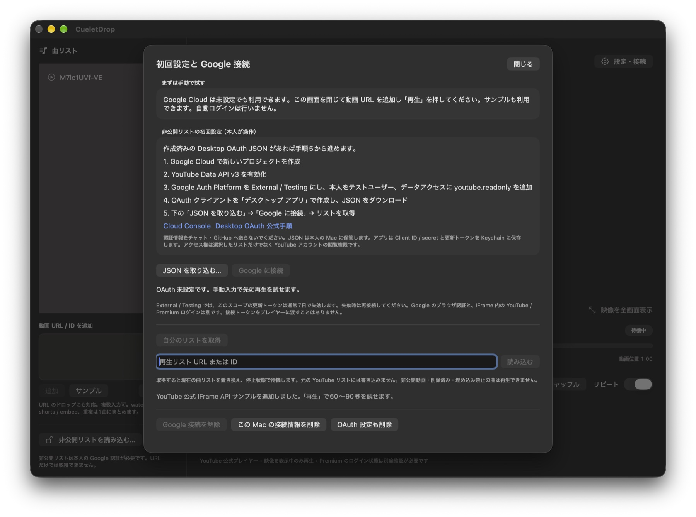

いつものリストを、短いダイジェストに
好きな曲を少しずつ、映像も眺めながら楽しみたい。そんな時間のために作っています。1曲を最後まで聴く代わりに、動画上の60秒から90秒までを再生し、次の曲へ自動で進みます。
順番どおりに聴く日も、シャッフルで出会い直す日も。自分の非公開再生リストを読み込む方法と、動画URLから小さな曲リストを作る方法を用意しています。
聴き方と、画面の楽しみ方
順番・シャッフル・リピート
再生順を選び、リピートでリストを繰り返せます。一時停止・停止・次へに加え、曲リストから再生する曲を選ぶ操作に対応。再生順とリピートの設定は、アプリを開き直しても復元します。
URLをまとめて追加
YouTube の動画URLや動画IDを入力して追加できます。複数行の貼り付け、Chrome／SafariからのURL・テキストのドロップにも対応。同じ動画は1曲にまとめます。
2つの曲間表示
「サムネイルを2秒表示」は、再生前に動画の画像を最低2秒表示します。「完全ギャップレス」は、その追加待機を設けず次へ進むモードです。次曲の準備を先に始めますが、通信・読み込みによる待ちは残り、無音ゼロは保証しません。前曲を止めてから次曲を再生し、音を重ねるクロスフェードは行いません。
映像に集中する全画面
全画面では曲リストを畳み、映像と必要な再生操作を表示。アンビエント背景をオンにすると、映像から作ったぼかし背景を余白に敷きます。背景は間隔を置いて更新し、映像と完全に同じタイミングで動くものではありません。
映像内でポインタを2.5秒動かさないとカーソルを隠します。アプリを非表示・最小化するなど、映像が見えなくなったときは再生を止め、戻っただけでは自動再開しません。
音量・字幕を引き継ぐ
音量・ミュート、字幕のオン／オフと希望言語を保存します。区間の最後の1秒では音量を下げて曲を終えます。字幕と言語の有無は動画によって異なり、アプリ側で字幕設定を変えると再生中の曲を1:00から読み直します。
基本の使い方
以下は、開発・限定試用環境での操作の紹介です。
- 曲を追加する。左下の「動画 URL / ID を追加」に入力して「追加」を押します。曲リストへURLをドロップする方法や、「サンプル」で動きを試す方法もあります。手動追加にはGoogle接続は不要です。
- 聴き方を選ぶ。「再生順」で順番／シャッフル、必要ならリピートを選びます。「曲の切替」でサムネイル2秒／完全ギャップレスを選びます。
- 「再生」を押す。1:00から始まり、1:30で次へ進みます。一時停止からは同じ位置で再開。「次へ」で次曲へ進めます。一時停止中の「次へ」は曲を選んで待機します。
- 映像の見方を変える。音量・字幕を調整し、「映像を全画面表示」で大きく表示します。Escapeまたは全画面終了ボタンで通常画面へ戻ります。
Space は再生／一時停止、→ は次の曲へ。URLなどの入力中と設定画面では、文字入力を優先します。
自分の非公開リストを使うには
非公開再生リストの取得には、本人のGoogle接続が必要です。リストを公開へ変更する必要はありません。現段階は個人向けの試作で、Google Cloudでの初回設定も本人が行います。
- Google CloudでYouTube Data APIを有効にし、デスクトップアプリ用のOAuth設定を用意します。
- アプリの「設定・接続」で本人のMacに保存したJSONを取り込み、「Google に接続」から外部ブラウザで認証します。
- 「自分のリストを取得」から選ぶか、リストのURL／IDを指定して読み込みます。現在の曲リストが置き換わり、停止状態で待機します。
取得は読み取り専用で、YouTube側の元リストは変更しません。許可する権限は選択した1リストだけに限らず、YouTubeアカウントのデータへの閲覧権限です。認証用JSONやトークンを、お問い合わせやGitHubに貼り付ける必要はありません。


アプリのOAuth接続と、動画プレイヤー内のYouTubeログインは別です。Premiumでの利用を想定していますが、ブラウザのログインやPremiumの状態がプレイヤーへ引き継がれるとは限りません。Googleのテスト用設定では接続が失効し、再接続が必要になる場合があります。
利用範囲と、知っておきたいこと
- インターネット接続と、YouTubeで埋め込み再生できる動画が必要です。非公開のリストを取得することと、非公開の動画を再生することは別です。
- 60秒以下の動画はスキップし、60秒を超え90秒未満の動画は末尾まで再生します。削除済み・埋め込み禁止などの動画は再生できません。
- 再生区間は1:00〜1:30固定です。通信や動画の状態によって開始・切替に差が出るため、厳密な30秒間隔を保証するものではありません。
- YouTubeの公式プレイヤーを使用します。動画のダウンロード、音声抽出、オフライン再生、バックグラウンド再生には対応しません。
CueletDrop は個人開発のアプリで、Google／YouTubeが提供・推奨する公式アプリではありません。YouTubeのサービス・動画の利用条件に従って利用します。
データの扱い
接続情報はMacのキーチェーンに、音量・字幕・再生順などの設定はMac内に保存します。読み込んだ曲リストは表示中のメモリで扱い、終了後の自動復元の対象ではありません。
認証・リスト取得・動画やサムネイルの表示ではGoogle／YouTubeへ通信します。開発者のサーバーへリストや認証情報を送る機能はありません。接続解除と、このMacの接続情報の削除は別の操作です。詳しくはプライバシーポリシーのCueletDrop欄をご覧ください。
開発状況と対応環境
時点の0.1.3（ビルド4）に基づく紹介です。macOS 14以降、Apple Silicon／Intel向けのUniversal版を開発しています。実行確認はApple Siliconの開発用Macで行っており、Intel・macOS 14実機、長時間の連続再生、Premiumの動作は引き続き確認が必要です。
アクセス権のある利用者向けには署名・Apple公証済みの限定配布版がありますが、一般配布は行っていません。公開時期・価格は未定です。掲載画像は操作・表示の例で、すべての利用条件での動作を保証するものではありません。
ご意見・お問い合わせはX の @egyoへ。最初はアプリ名と内容の概要だけをお知らせください。